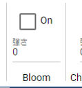

9.11. SystemEffect
|
|


This is a SystemEffect property. You can find this in the system effects tab of the ribbon bar. The values in the diagram are the default values.
Bloom property.
- strength:
Specify between 0 and 100.

Chromatic Abberation property.
- strength:
Specify between 0 and 1 in increments of 0.1.

Color grading property.
- Color:
Specifies the base color.
- temperature:
Specify between -100 and 100.
- Tint:
Specify between -100 and 100.
Depth Of Field property.
- Focus Distance:
Specify between 0.1 and 50 in increments of 0.05. This is the direct distance of focus for Depth Of Field.
- Aperture:
Specify between 0.1 and 32 in increments of 0.1.
- Focal Length of Lens:
Specify between 1 and 50.

Grain property.
- strength:
Specify between 0 and 1 in increments of 0.1.
- Size:
Specify between 0 and 1 in increments of 0.1.

Vignette property.
- strength:
Specify between 0 and 1 in increments of 0.1.
- Smoothness:
Specify between 0.1 and 1 in increments of 0.01. Adjusts whether to apply anti-aliasing to sharpen the edges where the Vignette effect is applied.
- Roundness:
Specify between 0 and 1 in increments of 0.01. Adjusts the vignette effect from circular to square.
- center X:
Specify between -3 and 5 in increments of 0.01. Adjusts the X coordinate of the center position of the Vignette effect.
- center Y:
Specify between -3 and 5 in increments of 0.01. Adjusts the Y coordinate of the center position of the Vignette effect.
Motion blur properties.
- Shutter angle:
Specify between 0 and 100.
- Sample count:
Specify between 4 and 32.